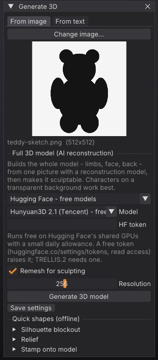

Image and text to 3D
SculptForge can turn a picture or a written description into a full 3D model that you can sculpt straight away. This chapter covers the Generate 3D window, the services it can use (free Hugging Face models, your own ComfyUI server, paid fal.ai or Meshy, your own command line, or an offline blockout) and the offline image tools: relief, inflate and stamp.


How it works#
- You give SculptForge an image (a sketch, concept art, a photo of a figurine) or a short description.
- The service you picked reconstructs a complete mesh: front, back, limbs and all.
- SculptForge opens the result as a new scene and, unless you turn it off, voxel-remeshes it into one even, watertight surface, so the brushes behave the same as on any other sculpt.
Nothing leaves your computer until you choose a hosted service and press Generate 3D model. For exactly what is sent where, see AI services and privacy below.
Open the Generate 3D window#
Any of these opens it:
- Drop an image file (PNG, JPG, BMP, TGA, PSD or GIF) onto the SculptForge window. The image is loaded as the picture for the From image tab and the window opens.
- Open the Generate palette and click Generate 3D.
-
Press F3, type
generateand press Enter.
The window has two tabs, From image and From text.
Generate from an image#
- On the From image tab, click Choose image... (or drop a file onto the window). A preview and the image size appear.
-
Pick a service in the drop-down under Full 3D model (AI reconstruction). The default is Hugging Face
- free models.
- Set the service's options (model, token or key, see below).
- Leave Remesh for sculpting on and set its Resolution (96 to 400, default 256). Higher keeps more detail and makes more triangles.
- Click Generate 3D model. A progress bar shows the queue position and progress; Cancel stops the job.
When it finishes, the status line reports the triangle count before and after remeshing, for example "Generated model imported (412000 tris, remeshed to 180000) - ready to sculpt".
Pictures that work well#
- One character or object per image.
- A plain or transparent background. SculptForge crops the subject out of a transparent background, centres it on a square and scales it to at most 1024 pixels before sending it.
- The whole subject in frame, seen from the front or a three-quarter view.
- A clean concept turnaround pose works better than a busy illustration with scenery.
Generate from text#
- On the From text tab, type one object into the box, for example "a stylised dragon head with curled horns" or "a cartoon fox sitting".
- Pick Hugging Face - free models, fal.ai, Meshy or ComfyUI - your server. Text to 3D does not work with My generator command or Offline blockout.
- Click Generate 3D model.
Which model runs depends on the service:
| Service | Text-to-3D model |
|---|---|
| Hugging Face | Hunyuan3D 2 mini Turbo (Tencent), or Hunyuan3D 2 if you chose it in Model. Any other choice uses Turbo |
| fal.ai | Hunyuan3D 3.1 Rapid (Tencent) |
| Meshy | Meshy's own text-to-3D model |
| ComfyUI | The text workflow you choose (the bundled text-to-3d uses FLUX.1 schnell and Hunyuan3D 2.1) |
Services#
| Service | Cost and setup | Good for |
|---|---|---|
| Hugging Face - free models | Free, no account. A free token raises the daily allowance | Trying things out, personal work |
| fal.ai - paid, your key | Paid per generation, needs a fal.ai key | Reliable capacity, newer models |
| Meshy - paid, your key | Paid, needs a Meshy key | Meshy's own models |
| ComfyUI - your server | Free, runs on your own GPU or a studio server | Privacy, custom workflows, studios |
| My generator command | Free, any program you run locally | Your own model or a studio service |
| Offline blockout (inflate silhouette) | Free and instant, no network | Simple shapes, a quick start |
Hugging Face (free)#
This runs each model author's own public demo on Hugging Face's shared ZeroGPU hardware. Pick a Model:
| Model | Notes |
|---|---|
| Hunyuan3D 2.1 (Tencent) | The default. Detailed shapes, about 20 seconds |
| TRELLIS.2 (Microsoft) | The most detail. Needs a Hugging Face token |
| Hunyuan3D 2 mini Turbo (Tencent) | The fastest, about 6 seconds |
| Hunyuan3D 2 (Tencent) | |
| Stable Fast 3D (Stability AI) | Quick and simple, removes the background itself |
GPU time is rationed per person per day, there can be a queue at busy times, and a demo can be paused or changed by its owner. To raise the allowance, create a free token with read access at huggingface.co/settings/tokens and paste it into HF token (or set the HF_TOKEN environment variable). When the allowance runs out you see "Hugging Face's free GPU time is used up for now"; add a token, wait for it to refill, or pick another model.
fal.ai and Meshy (paid)#
-
fal.ai: choose a Model (TRELLIS.2, Hunyuan3D 3.1 Pro, Hunyuan3D 3.1 Rapid or Meshy 6) or type any fal model id into Model id. Paste your key from fal.ai/dashboard/keys into API key, or set
FAL_KEY. -
Meshy: paste your key from meshy.ai (API settings) into API key, or set
MESHY_API_KEY.
Generations are billed to your account with that service. Errors such as "The API key was rejected", "Out of credits on this account" or "Rate limited" come from the service.
ComfyUI (your own server)#
Runs any ComfyUI workflow on your own computer or a studio GPU server, with whatever models it has. Nothing is sent anywhere else.
-
Start ComfyUI. It listens on
http://127.0.0.1:8188by default. If SculptForge runs on another computer, start ComfyUI with--listen(only on a network you trust: ComfyUI has no login). -
Install the models your workflow needs. The bundled Hunyuan3D 2.1 workflow needs
hunyuan_3d_v2.1.safetensorsinComfyUI/models/checkpoints. - In Generate 3D, pick ComfyUI - your server, enter the Server address and click Test connection. A good answer looks like "Connected: ComfyUI 0.42.0 - NVIDIA GeForce RTX 4090 (24.0 GB)".
- Choose a Workflow: a bundled one, or Other file (API format)... for your own.
- Click Generate 3D model. The progress bar shows your place in ComfyUI's queue.
Bundled workflows:
| Workflow | Tab | Needs |
|---|---|---|
hunyuan3d-image-to-3d | From image | The Hunyuan3D 2.1 checkpoint (7.4 GB) and a GPU with about 10 GB of memory |
text-to-3d | From text | FLUX.1 schnell, BiRefNet and Hunyuan3D 2.1 (about 25 GB of downloads) and a GPU |
sculptforge-inflate | From image | The ComfyUI-SculptForge node pack; no GPU. A quick blockout to check your setup |
Your own workflows must be saved in ComfyUI's API format (in ComfyUI: Workflow > Export (API)). To tell SculptForge where the inputs go, give nodes these titles:
| Node title | What SculptForge does |
|---|---|
sf_image | Puts the uploaded picture into this Load Image node. Without one, the first Load Image node is used |
sf_prompt | Puts your description into this node's text, prompt or string input. Without one, the first CLIP Text Encode not titled "negative" is used |
sf_seed | Sets the seed. Inputs named seed or noise_seed get it too |
SculptForge imports the first mesh file the workflow saves (Save GLB, Preview 3D and most 3D node packs work). For error messages and their fixes, see Troubleshooting.
My generator command#
Runs any command line on your computer: a local open-source model, a studio service, or a script that calls a cloud API. Type the command into the box. It must contain {input} (replaced with the image path) and {output} (replaced with the path to write, ending in .glb). Both are quoted for you, so don't add quotes. The command must write a GLB file to {output} and exit with status 0.
The box starts with a command that runs SculptForge's own silhouette inflation, which is a quick way to check that the pipeline works:
sculptforge-cli --set input={input} --set output={output} -c 'image_inflate path=$input subdivisions=2; export_glb path=$output'A wrapper for your own model can be as small as this:
# my_generator.py {input} {output}
import sys
image_path, output_path = sys.argv[1], sys.argv[2]
# load your model, run it on image_path, write a .glb to output_pathKeep API keys in environment variables that your script reads, not in the command line.
Offline blockout#
Offline blockout (inflate silhouette) inflates the outline of the picture into a rounded, closed mesh. It is instant and needs no network, but it is a puffy blockout, not a reconstruction: fine for simple shapes, not for characters.
Save your settings#
Save settings (the small button under Generate 3D model) stores the service, model, keys, token, ComfyUI address and generator command in your ai.json settings file, so they are set the next time you start SculptForge. Keys in ai.json are readable only by your user account. See where settings live.
Quick shapes from an image (offline)#
The From image tab also has three offline tools under Quick shapes (offline). They need no network and run instantly. The same tools are in the Generate palette as Relief, Inflate and Stamp.
| Tool | What it makes | Settings |
|---|---|---|
| Silhouette blockout > Inflate | A rounded, closed base mesh from the outline. Replaces the scene | Thickness (0.2 to 2, lower is flatter), Detail (64 to 384) |
| Relief > Make relief | A height-field relief: light areas rise. For logos, coins, emblems, height maps and texture photos. Replaces the scene | Depth (0.01 to 0.5 of the width), Detail (64 to 1024), Dark is high |
| Stamp onto model > Stamp from this view | Projects the image onto the current model from the current view as surface detail, into the active sculpt layer | Depth (0.001 to 0.1 of the model size), Dark is high |
After generating#
Generated meshes are a starting point. A typical next pass:
- Check the size of the remeshed result in the title strip (Verts, Tris). If the detail is too soft, generate again with a higher Resolution, or run Tool > Remesh > Voxel Remesh at a higher value on the result.
- Turn on X symmetry if the subject is symmetrical, and sculpt the forms with Clay Buildup, Move and Dam Standard (Sculpting and brushes).
- Save a project (Ctrl+S): generated scenes start untitled.
From scripts and agents#
The same services are available as commands, in the console, sculptforge-cli, Python and MCP agents:
# free (Hunyuan3D 2.1 on Hugging Face)
sculptforge-cli -c 'image_to_3d path=hero.png; export_glb path=hero.glb'
# TRELLIS.2 with a Hugging Face token
HF_TOKEN=hf_... sculptforge-cli -c 'image_to_3d path=hero.png model=trellis-2; export_glb path=hero.glb'
# fal.ai, keeping the raw (not remeshed) result
FAL_KEY=... sculptforge-cli -c 'image_to_3d path=hero.png service=fal model=fal-ai/trellis-2 remesh=false; export_glb path=hero.glb'
# text to 3D on your own ComfyUI, repeatable with a seed
sculptforge-cli -c 'text_to_3d prompt="a carved stone owl" service=comfyui url=http://gpu-box:8188 seed=42; export_usd path=owl.usdz'
# is the ComfyUI server up?
sculptforge-cli -c 'comfyui_check'
# offline tools
sculptforge-cli -c 'image_relief path=logo.png depth=0.08; export_stl path=logo.stl'
sculptforge-cli -c 'image_inflate path=sketch.png thickness=0.7; save_project path=blockout.sfproj'| Command | Key parameters |
|---|---|
image_to_3d | path (required), service (huggingface, fal, meshy, comfyui, command, inflate), model, workflow, url, seed, remesh (default true), resolution (64 to 512, default 256) |
text_to_3d | prompt (required), service (huggingface, fal, meshy, comfyui), model, workflow, url, seed, remesh, resolution |
image_relief | path (required), depth (default 0.12), resolution (default 384), invert |
image_inflate | path (required), thickness (default 1), resolution (default 160), subdivisions (default 1) |
image_project | path (required), depth (default 0.03), invert. Projects from the front (+Z) |
comfyui_check | url |
Without service=, commands use the settings you saved in the app. See Scripting and automation.
Privacy and model licences#
- SculptForge has no servers of its own and no telemetry. A hosted service receives only the prepared image (or your text) and your key or token, if any.
- The free Hugging Face option runs the model authors' own demos; SculptForge does not host or bundle any model.
- Each model has its own licence: TRELLIS.2 is MIT; Hunyuan3D models use the Tencent Hunyuan Community License (not for use in the EU, UK or South Korea); Stable Fast 3D uses the Stability AI Community License (free under US $1M annual revenue). Read the licence before commercial use.
- With ComfyUI, the picture goes only to the server address you entered.
The full table of what is sent where is in docs/ai-services.md in the SculptForge repository.
See also#
- Sculpting and brushes: refine the generated model
- Subdivide, Remesh, Decimate and LODs: voxel remesh in detail
- Gaussian splats: start from a phone capture instead of a picture
- Scripting and automation: batch generation from the command line
- Troubleshooting: quota and connection messages